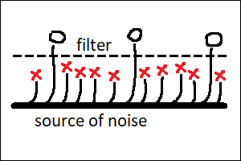

By “noise” I mean the generation of hypotheses, whereas “filter” would amount to verifying if they actually work. Random hypotheses are fine, hence the word “noise”. Examples would be “stupid” ideas for brainstorming sessions, great discoveries made by accident, and also high risk investments (“innovation by failure”). “Filters” could be the free market verifying if a startup should survive, brainstorming review process selecting worthy ideas out of garbage or a scientist realizing that a random thought which has accidentally crossed her mind is actually brilliant. Biological life is creative as well, fueled by random mutations of DNA and filtered by competition between biological organisms.
Some of the most popular and highly revered emblems of scientific creativity will be things like Archimedes sitting in a bath or Newton watching an apple fall from a tree. What these stories have in common is that the nature of the events triggering the discovery is seemingly random, and definitely not predictable. The noise itself is not enough though. Not everybody sitting in a bath discovers the Archimedes’ principle. Discovery by accident requires that a right person appears in the right place at the right time. Here, this “right person” is what I would call the “filter”.
This “filter” actively searches the environment for random events and other phenomena which might be of use for the task which this filter is currently working on. The verification process looks like pure magic, and it’s what scientists will call “scientific intuition”. Not everybody has it, hence the need for the “right person”. But the right person alone is not enough either. This process also needs noise. Good sources of creative inspiration would be things like visiting new places, meeting new people or carefully observing the world around (and noticing new things). Inspiration can also (sometimes) come from drugs, which are a powerful (even if deadly) source of noise.
On a higher level of abstraction, “brainstorming” is a method of collective innovation which amounts to a group of people meeting together and generating a large number of seemingly random ideas on a given topic. Good brainstorming session will explicitly encourage its participants to say aloud or write down anything remotely relevant, however stupid it might look at first glance. Brainstorming is often more efficient than a single human thinking alone, because it effectively stacks two different creative processes on top of each other. The first one is its human participants coming up with random ideas which nonetheless have to be relevant to the topic. The second creative stage is collective filtering of the ideas generated in such a way, with the goal of only keeping those which are not only relevant, but also actually work. In this second stage, both the generation and the filtering are performed by intelligent agents.
Moving one more level up, we reach technological startups and other innovative companies, which are well known and expected to fail at a high rate. This time, it’s entire groups of people running the brainstorming sessions who are the “source of noise”, whereas the ultimate filter is the free market itself, deciding which companies will win the battle. Curiously, this ultimate filter is actually not an intelligent agent.
Intelligent agents are invaluable for speeding up the innovation. However, they are, strictly speaking, not exactly necessary for a creative process to occur. Biological life is an example. It operates on strings of bits encoded in DNA and RNA molecules, which we call “genes”. Their only source of noise is random mutations: modifications of individual bits, deletions of existing parts of the sequence, as well as duplications and relocations of such substrings. The ultimate “filter” for biological life is competition between biological organisms, deciding which ones among them will be able to reproduce the genes they hold inside, and at which rate. Biological evolution is not an intelligent process. But it’s definitely a creative one. It has been able to invent amazing things, including arguably the single most complex object on planet Earth — the human brain.
